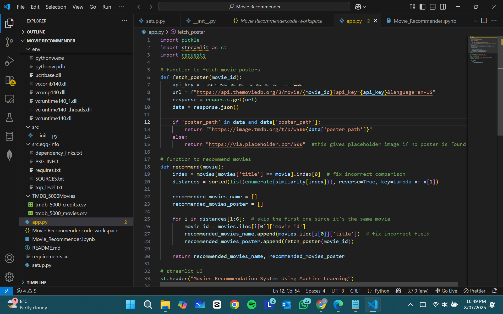

Movie Recommender System
The Movie Recommender System helps users find movies similar to the ones they enjoy. It works by analysing movie details such as the cast, crew, genres, and plot. Using text analysis and machine learning, it compares movies and identifies those with the most similarities. When a user enters a movie title, the system quickly searches a database of over 4,800 movies and recommends the top 5 most similar ones.
Key Features
- Data Wrangling & Preprocessing: Cleans and organises the movie dataset, extracting key details like cast, crew, genres, and plot.
- Text-Based Similarity Matching: Combines movie details into descriptive tags for comparison.
- Vectorisation with Count Vectoriser: Converts text into numerical data using word frequency representations.
- Global Word Frequency Analysis: Extracts frequently used words to build a strong comparison model.
- Feature Representation: Represents each movie as a feature vector in a multi-dimensional space.
- Cosine Similarity Calculation: Measures the closeness of movies based on text data.
- Recommendation System: Displays the top 5 most similar movies when a user enters a movie title.
Downloading Dataset
You can download the dataset using the link below:
Download Dataset (TMDB_5000Movies.zip)Jupyter Notebook
The Movie Recommender System was built by loading and preprocessing data, extracting features, and computing similarities. Visualisations and exploratory data analysis (EDA) helped refine the process.
VSCode
VS Code was used to write, test, and run the Streamlit-based Movie Recommender System. It helped in coding the UI, integrating recommendation logic, and fetching movie posters using the TMDb API.
Streamlit
Streamlit was used to build and deploy the interactive web app for the Movie Recommender System. It provided a user-friendly interface for movie selection and generating recommendations.